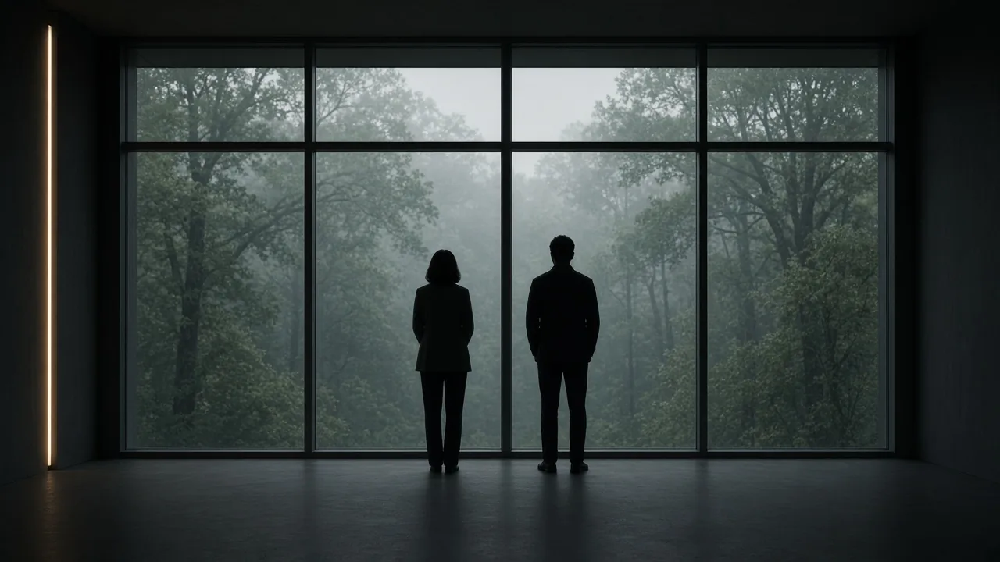
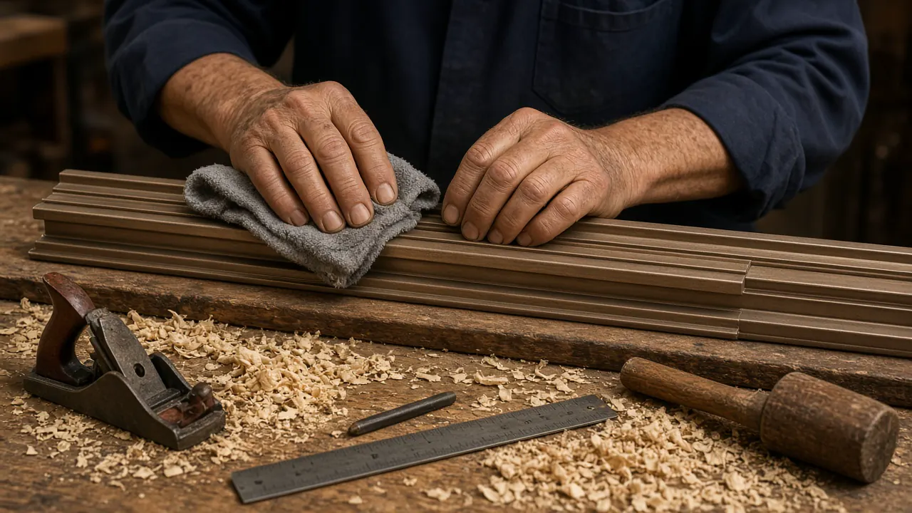
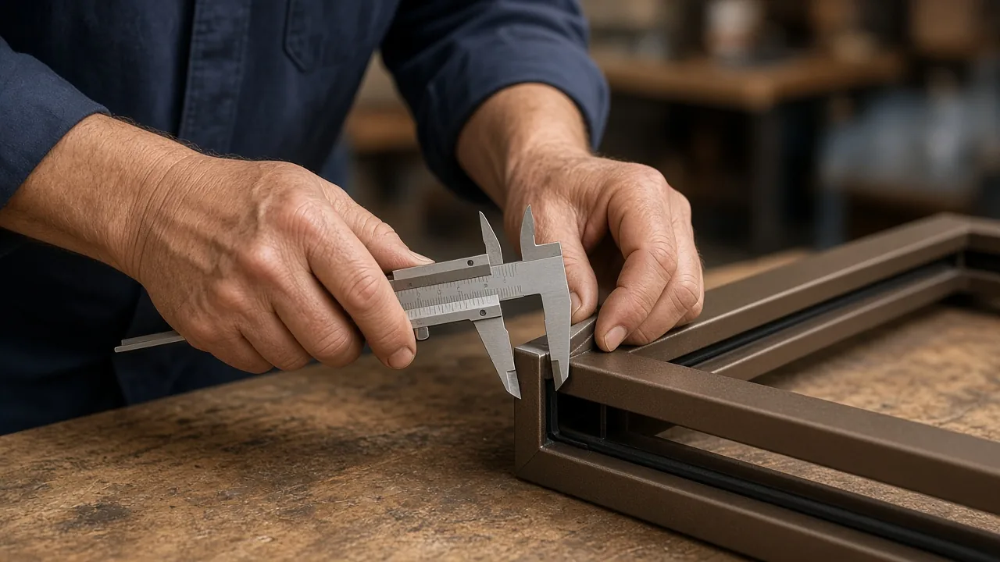
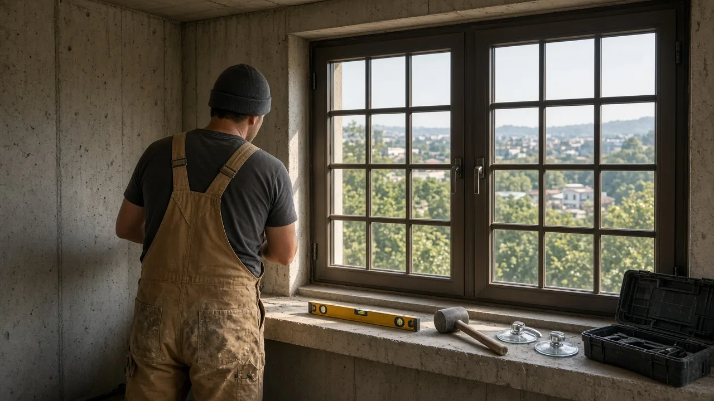
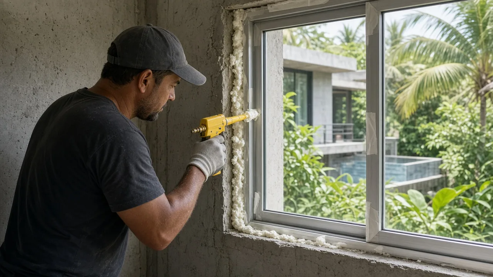
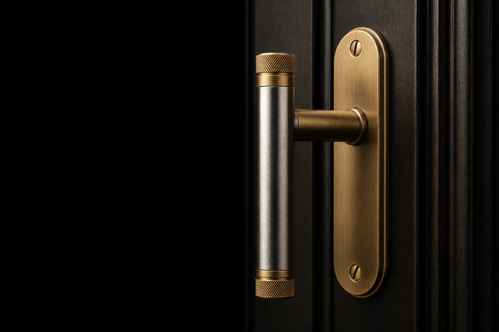

CHAPTER FOUR
Five conversations.
One window worth living behind.
ห้าบทสนทนา — สู่หน้าต่างที่อยู่กับเราไปอีกสามสิบปี
I
Listen
WEEK 1
We visit the site and walk the rooms with you. We ask which sounds you want gone — the soi dogs, the BTS, the construction next door — and which ones you want to keep, like rain on the roof. We measure. We listen.

II
Design
WEEK 2 — 3
We propose a system tuned to your facade, your view, your light. Glass build-up. Frame profile. Hardware. Open type. Color. We work with your architect, or directly with you. The proposal is complete — drawings, specifications, and an exact quotation.
III
Demonstrate
WEEK 4
You visit our sound chamber. You hear the difference between single glazing and Signature, and between Signature and Reserve. You decide with your ears, not a brochure. If you want to see a finished install, we arrange a visit to a completed home.
IV
Build
WEEK 5 — 12
Production at our factory partner. Pre-shipment inspection by our QC team. Sea freight to Bangkok. Site preparation in parallel. Photographed at every stage. We send weekly updates so you always know where the work is.


V
Install & care
WEEK 13 + ∞
Master installation by our team — the same hands across thirty years of premium work in Thailand. Then a decade of warranty held in Bangkok. Two service visits per year, no charge. The relationship begins, not ends. The laboratory number only holds if the rough opening is sealed as an envelope joint, not as leftover foam.



A window that lasts thirty years
is not made by the factory.
It is made on the floor of your home.
STELLA principle
START AT WEEK ONE
Begin the first conversation.
A site visit is the right beginning.